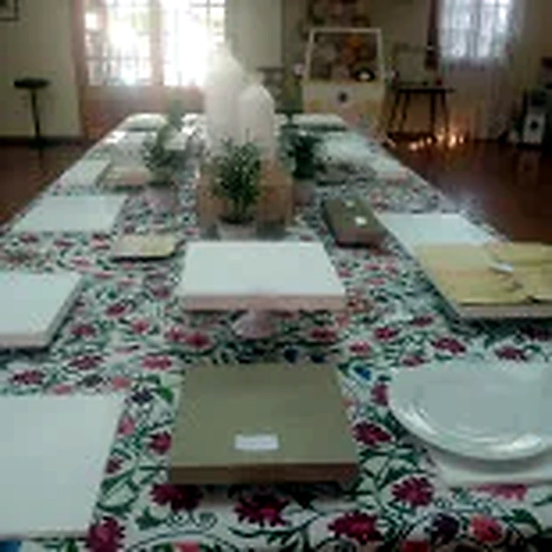

01
Almuerzo
Bocadillos, tostadas y clásicos de la mañana.
Un restaurante mediterráneo en Nàquera, con una propuesta ligada a los almuerzos, las tapas y la cocina valenciana.
El Pi aparece en directorios gastronómicos como un restaurante de cocina mediterránea, con bocadillos, tapas, raciones y platos de arroz entre sus referencias más habituales.
Las reseñas y fichas públicas también mencionan espacios para grupos y comidas familiares. Los detalles exactos de salones, aforos y servicios deben confirmarse con el establecimiento antes de publicarlos como información oficial.
Esta página es un prototipo de nueva presencia digital. No representa una web oficial ni sustituye la información confirmada por el restaurante.

Bocadillos, tostadas y clásicos de la mañana.
Tapas, mariscos y raciones tradicionales.
Paellas, fideuà y arroces valencianos citados en reseñas públicas.